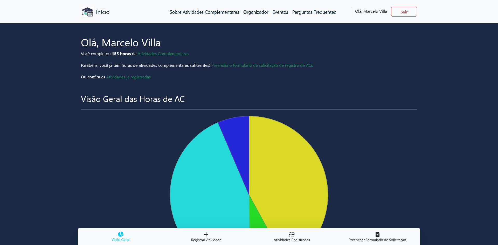

Personas são
personagens fictícios que criamos a partir de
pesquisas com usuários reais. Elas nos ajudam a ter uma
visão mais clara sobre quem usará a solução
proposta. Esses personagens são essenciais para o time de design,
pois permitem que a gente entenda as
necessidades, dificuldades e expectativas de
diferentes tipos de usuários. As personas funcionam como um
guia, mostrando para quem o design está sendo
realmente feito.
É importante lembrar que as personas são baseadas em
dados reais, coletados de diversas pessoas, mas
não descrevem um usuário específico. Em vez disso,
elas representam arquétipos dos usuários mais
comuns, e até mesmo os extremos, quando necessário.
Como Chegamos a Essas Personas
Para criar essas personas, realizamos uma
análise aprofundada dos dados coletados na etapa de
imersão. Esse processo de análise foi feito passando pelas seguintes
etapas:
Organização e consolidação dos dados brutos:
Agrupamos as informações da etapa anterior em um formato
centralizado e de fácil consulta.
Identificação de padrões e semelhanças:
Analisamos os dados para encontrar tendências em comportamentos,
frustrações recorrentes, objetivos e motivações compartilhadas,
além de opiniões e atitudes semelhantes sobre o processo atual ou
uma solução ideal.
Por exemplo, um padrão identificado nas respostas sobre
dificuldades foi a
"falta de clareza e centralização das informações sobre o
processo de atividades complementares". Várias respostas indicam dúvidas sobre "para onde enviar",
"quantas horas cada certificado vale", "regras de horas", "quando
enviar", e a dificuldade em "encontrar todas as informações
necessárias em um único veículo de informação". Esse padrão sugere
uma forte necessidade por um guia claro e um portal unificado.
Criação de segmentos de usuários: Com base nos
padrões identificados, definimos
grupos distintos de usuários. Cada grupo
representou um conjunto de características, comportamentos, dores
e objetivos que o diferenciava dos demais.
Aqui notamos que o principal fator de segmentação entre os
usuários era o tempo de curso. Alunos em estágios
semelhantes do curso tendiam a ter experiências parecidas com as
atividades complementares. Estudantes no início do curso
frequentemente relatavam a
falta de informações claras sobre as regras de ACs, enquanto aqueles próximos de concluir (ou que já concluíram)
suas ACs apontavam problemas relacionados ao
processo de entrega e contabilização das atividades.
Desenvolvimento das personas: Para cada segmento,
foi criada uma persona detalhada, incluindo um nome fictício,
dados demográficos relevantes, um breve histórico, personalidade,
objetivos, dores, uma citação que a representa e um cenário de
uso. O foco foi nos detalhes mais importantes para o projeto,
evitando informações desnecessárias.
Validação e refinamento: As personas foram
compartilhadas e discutidas com a equipe para garantir que
realmente representam os usuários da pesquisa e são úteis para as
decisões de design, permitindo ajustes e refinamentos conforme o
projeto avança.
Com base em todas essas informações consolidadas e analisadas,
chegamos às personas a seguir. Nosso objetivo foi desenvolver
personagens que
abrangem a diversidade de todos os nossos usuários
em potencial, representando alunos em
diferentes fases do curso e com
experiências variadas em relação às atividades
complementares.
Personas
Larissa Alves
"Preciso começar a me planejar agora!"
Idade: 19
Curso: Ciência da Computação
Período: 2º Período
Cidade:
Rio de Janeiro, Rio de Janeiro
Status: Usuário Primário
Ferramentas Digitais
Resolução de Problemas
Organização Pessoal
Burocracia
Sociabilidade
Gestão de Tempo
Organizada
Estudiosa
Prestativa
Objetivos
Entrar em um projeto de extensão.
Ser aprovada nas matérias atuais.
Aprender a programar além do básico das primeiras
aulas.
Frustrações
Ela sente que só fica sabendo sobre alguns eventos
depois que eles acabam.
Ela quer planejar quais atividades complementares
ela quer fazer, mas fazer os cálculos manualmente é
trabalhoso.
Não entende o funcionamento de processos como a
inscrição em matérias no período de ajustes,
trancamento e envio de horas complementares.
Bio
Larissa Alves entrou na universidade há pouco tempo e
ainda não conhece todas as opções de atividades fora
da sala de aula. Ela já ouviu falar da empresa júnior
e assistiu palestras em tópicos de seu interesse, mas
não está se preocupando com horas complementares
ainda. Metódica e responsável, ela está acostumada a
usar aplicativos de organização pessoal, seja para
estudos, finanças ou sua rotina diária.
Relacionamentos
Costuma tirar dúvidas com os veteranos.
Participa de alguns grupos de Whatsapp/Telegram da
universidade
Expectativas
Espera que a aplicação tenha um design amigável e
moderno.
Quer poder experimentar com diferentes combinações
de atividades e horas realizadas em cada.
Espera poder marcar quais atividades foram
concluídas conforme ela avança no curso.
Requisitos
A interface deve funcionar bem em dispositivos
mobile.
Deve ser fácil incluir, remover e alterar as horas
de uma atividade.
O sistema deve apresentar para ela todas as opções
de atividade possíveis.
Tarefas Críticas
Planejar quando ela deve começar um estágio, projeto
de extensão ou iniciação científica.
Determinar quantas atividades ela tem q realizar no
mínimo para ser aprovada.
Lucas Menezes
"Pô eu fui naquele minicurso período passado... será que
eu ainda acho o certificado?"
Idade: 21
Curso: Ciência da Computação
Período: 5º Período
Cidade:
Niterói, Rio de Janeiro
Status: Usuário Primário
Ferramentas Digitais
Resolução de Problemas
Organização Pessoal
Burocracia
Sociabilidade
Gestão de Tempo
Notebook
Celular
Google Drive
Trello
Objetivos
Conseguir um bom estágio nos próximos períodos, que
o ajude a aplicar o que aprende na prática.
Ampliar seu portfólio acadêmico participando de
eventos, projetos e iniciativas extracurriculares.
Se formar dentro do prazo, evitando surpresas com
burocracias no final do curso.
Frustrações
Falta de informação clara sobre regras das
atividades complementares.
Dificuldade de manter tudo organizado (certificados,
etc).
Não saber sobre onde e como registrar as atividades.
Bio
Lucas Menezes está no 5º período de Ciência da
Computação na UFF. Já terminou as disciplinas mais
básicas do início do curso, e agora começa a se
interessar por atividades que o conectem ao mercado.
Está começando a pesquisar sobre os diferentes tipos
de estágio que pode fazer, tentando entender como
funcionam os trâmites da universidade.
Embora se vire bem com tecnologia e ferramentas de
organização, Lucas sente dificuldade com algumas
regras pouco claras do curso, como o regulamento das
atividades complementares. Já participou de
minicursos, hackathons e semanas acadêmicas, mas
muitas vezes esqueceu de guardar ou organizar os
comprovantes. Isso o preocupa, já que quer evitar
correrias no final do curso.
Expectativas
Espera visualizar com clareza as regras e categorias
de atividades.
Quer organizar as atividades por categoria e que ser
avisado sobre horas restantes ou concluídas.
Busca facilidade para anexar comprovantes em
diferentes formatos (PDF, imagem, link).
Requisitos
Interface amigável e responsiva (acesso via
computador e celular).
Sistema validado pela coordenação do curso (ou ao
menos esteja bem alinhado com as regras do curso).
Tarefas Críticas
Registrar atividades complementares assim que forem
realizadas.
Fazer upload e backup dos certificados e
comprovantes.
Verificar se está cumprindo os requisitos das
categorias exigidas pela coordenação.
Relacionamentos
Consulta colegas de curso sobre quais atividades são
aceitas.
Participa de grupos da turma no WhatsApp e Discord
para ficar por dentro dos eventos.
Interage com a coordenação apenas quando necessário,
mas tem uma boa impressão sobre os profissionais.
Natália Fernandes
"Ainda não cheguei a ver direito as coisas das
atividades complementares."
Idade: 22
Curso: Ciência da Computação
Período: 4º Período
Cidade:
Niterói, Rio de Janeiro
Status: Usuário Primário
Ferramentas Digitais
Resolução de Problemas
Organização Pessoal
Burocracia
Sociabilidade
Gestão de Tempo
Miro
Celular
Objetivos
Garantir um alto rendimento na faculdade.
Participar de atividades complementares quando
puder.
Reduzir a ansiedade e a sensação de desorganização.
Frustrações
Dificuldade de manter equilíbrio entre vida social e
faculdade.
Dificuldade de arrumar tempo para participar de
horas complementares.
Dificuldades em como descobrir eventos acontecendo
na UFF.
Bio
Natália Fernandes está atualmente no 4º período do
curso de Ciência da Computação na UFF. Embora ainda
esteja cursando disciplinas básicas, já passou da fase
de adaptação e não se considera mais uma novata na
universidade.
Apesar do tempo de casa, Natália ainda encontra
dificuldades para se manter informada sobre eventos,
palestras e outras atividades extracurriculares que
contam para as horas complementares. Quando descobre
algo de interesse, muitas vezes já está ocupada com
compromissos pessoais — como cuidar de seu irmão mais
novo —, demandas acadêmicas ou momentos de lazer
necessários para equilibrar sua rotina.
Como resultado, mesmo após quase dois anos de
graduação, Natália acumula poucos certificados e
sente-se perdida sobre como começar a organizar suas
horas complementares. Ela gostaria de uma forma mais
prática e centralizada de acompanhar oportunidades e
gerir seu progresso.
Expectativas
Espera que o aplicativo facilite a visualização e o
acompanhamento das suas horas complementares
Deseja receber notificações sobre eventos relevantes
com antecedência suficiente para poder se organizar.
Quer se sentir mais no controle do processo, sem
precisar buscar informações em várias fontes
desconexas.
Requisitos
Interface simples e intuitiva, que não exija muito
tempo de aprendizado.
Integração com fontes confiáveis de eventos da UFF
(como sites de departamentos ou centros acadêmicos).
Funcionalidade para armazenar certificados,
registrar atividades e visualizar o progresso rumo à
carga horária obrigatória.
Tarefas Críticas
Ser capaz de visualizar oportunidades disponíveis de
forma filtrada (por tipo de atividade, data, carga
horária, etc.).
Registrar e gerenciar atividades complementares já
realizadas, anexando certificados digitalmente.
Receber alerta personalizados com base nos
interesses e na disponibilidade de tempo da usuária.
Relacionamentos
Depende principalmente de colegas de turma para
descobrir eventos e palestras.
Às vezes vê anúncios em grupos de WhatsApp ou redes
sociais, mas sente que as informações são dispersas
e fáceis de perder.
Gostaria de ter uma fonte central e oficial de
informações, já que nem sempre tem tempo para
acompanhar todas as conversas e canais.
Marcelo Villa
"Preciso enviar esses certificados pra me formar e ser
efetivado no estágio"
Idade: 24
Curso: Ciência da Computação
Período: 7º Período
Cidade:
Rio de Janeiro, Rio de Janeiro
Status: Usuário Primário
Ferramentas Digitais
Resolução de Problemas
Organização Pessoal
Burocracia
Sociabilidade
Gestão de Tempo
Macbook
Notion
Google Sheets
Objetivos
Concluir todas as horas complementares exigidas pela
UFF antes do fim do 8º período.
Organizar comprovantes e certificados de maneira que
facilite a entrega para a coordenação.
Evitar atrasos na colação de grau por pendências
burocráticas.
Ser efetivado na empresa onde estagia como
desenvolvedor.
Frustrações
Dificuldade em controlar e comprovar as horas
complementares
Falta de clareza sobre quais atividades contam e
como comprovar
Medo de atrasar a formatura por algo "burocrático"
Processo da universidade é confuso ou pouco prático.
Não tem certeza se tem todas as horas necessárias
para se formar
Bio
Marcelo tem 24 anos e está no 7º período de Ciência da
Computação na UFF. Atualmente, estagia em um banco
como analista de infraestrutura, onde trabalha 6 horas
por dia e tem grande interesse por automações e
soluções escaláveis. Já participou de uma empresa
júnior e fez iniciação científica nos primeiros anos
da graduação, além de ter comparecido a diversas
palestras e eventos acadêmicos. Tem conhecimento com
algumas linguagens de programação e ferramentas de
engenharia de software. Embora sua rotina seja
corrida, ele ainda arranja tempo para jogar alguns
games e relaxar. Marcelo gosta do trabalho que faz, se
motiva com desafios e está focado em se formar dentro
do prazo para ser efetivado. Apesar de já tem algum
controle de horas em uma planilha e guardar os
certificados no seu computador, ele ainda tem alguns
certificados perdidos. Seu maior obstáculo no momento
é reunir e organizar todas as horas complementares
exigidas pela universidade — ele quer evitar qualquer
imprevisto que atrase a colação de grau, ele conhce as
regras para o envio dos certificados e sabe que está
no período correto definido pela cordenação.
Expectativas
Visualizar claramente o quanto já completou e o que
ainda falta em termos de horas complementares.
Cadastrar atividades rapidamente, com campos simples
e objetivos.
Anexar certificados facilmente e deixá-los
organizados por categoria.
Preencher o documento com os certificados
automaticamente para enviar pronto a cordenação
Requisitos
Controle preciso das horas complementares, com
categorização por tipo de atividade (ensino,
pesquisa, extensão etc.) conforme exigido pela UFF.
Upload e armazenamento seguro de comprovantes, como
certificados e declarações em PDF ou imagem.
Geração de um relatório completo e exportável,
pronto para ser entregue à coordenação do curso.
Tarefas Críticas
Registrar suas horas complementares.
Garantir que já tem todas as horas necessárias.
Receber alerta personalizados com base nos
interesses e na disponibilidade de tempo da usuária.
Baixar um arquivo final para o envio para a
coordenação
Relacionamentos
Tem grupos de whatsapp com colegas de curso.
Acompanha os emails da coordenação e professores.
Cenários Problema
Um cenário é uma história detalhada sobre pessoas
realizando uma atividade específica. Ele deve ser concreto, rico em
detalhes contextuais e descrever situações de uso. É uma ferramenta
que pode ser utilizada em conjunto com as personas para aprofundar o
entendimento sobre as interações dos usuários com um sistema.
Como os Cenários Ajudam no Design da Solução
A utilização de cenários é fundamental para o processo de design por
várias razões importantes:
Destacam Objetivos Cenários evidenciam os
objetivos sugeridos pela aparência e pelo comportamento de um
sistema, ajudando a focar o design no que o usuário realmente quer
alcançar.
Levantam Questões e Novas Proposições: Quando um
aspecto não está bem descrito no cenário, ele provoca perguntas do
tipo "e se", estimulando a equipe a buscar respostas que completam
a história e geram novas ideias e proposições para a solução.
Feedback do Usuário Precoce: Permitem obter
feedback valioso dos usuários sem a necessidade de construir um
protótipo funcional completo, o que economiza tempo e recursos.
Avaliação de Alternativas de Design: Ajuda a
equipe a se colocar no lugar do usuário, avaliando constantemente
as alternativas de design em face dos cenários e personas, o que
pode reduzir a frequência de testes de usabilidade mais caros.
Resolução de Discordâncias: Cenários, em conjunto
com as personas, podem ser usados para resolver discordâncias
sobre decisões de design, referenciando as necessidades e
comportamentos dos usuários.
Como Foram Criados os Cenários
Com base nas personas que criamos e nos dados levantados na etapa de
imersão (questionários, entrevistas, desk research), desenvolvemos
os cenários problema seguindo os seguintes passos:
Definição do Objetivo do Cenário: Para cada
persona relevante, foram identificados um ou mais objetivos que
ela tenta alcançar ou um problema que enfrenta no contexto das
atividades complementares.
Construção da Narrativa: Escrevemos uma história
detalhada e sequencial, que inclui contexto da situação, atores
envolvidos, bem como objetivos, planejamento, ações e avaliação da
persona, e também os eventos decorridos das ações.
Identificação de Pontos Problemáticos: Durante a
escrita do cenário, foram listados pontos de problemas que
surgiram. Por exemplo, a dificuldade em encontrar informações
claras e centralizadas, a burocracia do processo de envio no final
do curso, ou a falta de acompanhamento das horas ao longo do
tempo.
Levantamento de Perguntas "E Se...": O cenário
resultou em perguntas que levaram a novas proposições de design,
como: "E se o sistema mostrasse um gráfico com as horas de
atividades já concluídas?".
Ao construir esses cenários, tivemos uma compreensão ainda mais
profunda dos desafios enfrentados pelos nossos usuários, o que nos
permitiu projetar uma solução mais intuitiva e eficaz, alinhada às
necessidades reais das personas.
Análise de Tarefas: Hierarchical Task
Analysis (HTA)
A Análise de Tarefas é uma etapa crucial no processo de design de
interação, pois nos permite entender detalhadamente como os usuários
realizam suas atividades e quais passos são envolvidos para atingir
seus objetivos. Para este projeto, optamos pela
Hierarchical Task Analysis (HTA) , uma abordagem
que nos permite decompor tarefas complexas em subtarefas menores e
mais gerenciáveis, revelando a estrutura hierárquica das ações do
usuário.
O que é a HTA e Como Ela Ajuda no Design da Solução?
A HTA é uma técnica utilizada para descrever a estrutura hierárquica
de uma tarefa complexa. Ela envolve a decomposição de uma "tarefa
principal" (ou objetivo geral) em "subtarefas" e "operações". A
representação visual da HTA geralmente se assemelha a uma árvore,
com a tarefa principal no topo e os níveis mais baixos detalhando as
ações específicas.
Os elementos chave da HTA são:
Tarefas (Goals): O que o usuário pretende
alcançar.
Subtarefas (Sub-goals): As etapas intermediárias
necessárias para completar a tarefa principal.
Operações (Operations): As ações mais básicas e
atômicas que não podem ser decompostas ainda mais (ex: clicar,
digitar).
Planos (Plans): Descrevem as condições e a ordem
em que as subtarefas e operações devem ser executadas.
Como Fizemos a HTA
Com base nos dados coletados na etapa de imersão (questionários,
entrevistas, análise comparativa) e nas personas que criamos,
realizamos a HTA seguindo os seguintes passos:
Definição da Tarefa Principal (Goal): A partir
dos cenários problema e dos objetivos das personas, selecionamos
uma tarefa de alto nível que nossos usuários precisam realizar.
Decomposição Hierárquica: A tarefa principal foi
decomposta em subtarefas. Cada subtarefa, se ainda for complexa,
foi decomposta em níveis inferiores até chegarmos a operações
básicas.
Detalhar Operações e Planos: Para cada subtarefa,
foram identificadas as operações específicas (ações do usuário) e
os planos que descrevem a ordem e as condições para sua execução.
Identificação de Pontos de Oportunidade e Problemas: A HTA nos permite visualizar onde o processo atual é mais
ineficiente, confuso ou propenso a erros, destacando oportunidades
para melhorias no design do sistema.
Ao aplicar a HTA dessa maneira, obtivemos um mapa das ações dos
usuários, permitindo que o design da solução seja focado em melhoras
os passos e resolver os problemas específicos enfrentados nas etapas
de interação com o sistema.
Workshop de Ideação: Crazy 4
O Crazy 8 é uma técnica de
brainstorming e
prototipagem rápida muito utilizada no design
thinking, UX design, e em workshops de ideação. É uma forma rápida e
eficaz de gerar múltiplas ideias diferentes em um
curto período de tempo.
Na etapa de ideação, realizamos uma adaptação dessa técnica chamada
Crazy 4. Essa atividade foi realizada em aula, onde
fomos instruídos a pensar individualmente em 4 soluções diferentes
para resolver o problema levantado no HMW(How May We).
Tipos de Soluções
Cada uma das soluções devia ter um foco em um dos aspectos a seguir:
Uma solução cara: Como chegar numa solução se
orçamento não fosse o problema.
Uma solução barata e rápida: Como chegar numa
solução usando o menor orçamento possível.
Uma solução inspirada em jogos: Como chegar numa
solução que fosse baseada em jogos e gameficação.
Uma solução baseada em robôs/IoT: Como chegar
numa solução que utilizasse robôs ou Internet das Coisas.
Ideias Selecionadas para Desenvolvimento
Depois de cada membro do grupo chegar nas suas soluções, nos
juntamos e discutimos sobre quais ideias podiam ser adaptadas na
nossa solução.
As seguintes ideias foram escolhidas:
Validação por QR Code: Uma solução que permitiria
ao usuário ler um QR Code em uma atividade (como uma palestra)
para obter seu certificado diretamente e ter essa atividade salva
automaticamente no sistema.
Preenchimento Automático por Upload de Certificado:
Uma funcionalidade onde o usuário poderia registrar uma atividade
fazendo o upload de um certificado, e o sistema utilizaria
tecnologias "robóticas" (como OCR e IA) para preencher as
informações relevantes automaticamente, agilizando o processo.
Essas ideias se mostraram realmente úteis quando integradas no nosso
design, melhorando a experiência do usuário entregando maneiras mais
satisfatórias de resolver os seus problemas.
Soluções do Daniel
Soluções do Rodrigo
Ideias Aproveitadas
Protótipo
O protótipo é a materialização das ideias desenvolvidas nas etapas
anteriores do nosso projeto. Ele permite que os designers tenham uma
plataforma paupável para testar as funcionalidades, validar as
soluções propostas e coletar feedback dos usuários, antes de
investir em um desenvolvimento completo.
As escolhas de design para este protótipo foram guiadas por diversas
técnicas e abordagens teóricas de interação
humano-computador. Aplicamos princípios como os da
psicologia das cores, os
princípios de Gestalt, e as
heurísticas de usabilidade para garantir que a
interface tenha uma boa usabilidade e para proporcionar uma melhor
experiência do usuário.
As principais funcionalidades já implementadas nesta fase incluem:
Registro de novas atividades.
Visualização das atividades concluídas por usuário.
Edição e remoção de atividades existentes.
Descoberta de eventos com atividades complementares.
Acesso a informações do regulamento.
Preenchimento e exportação do formulário de Solicitação de
Registro de Atividade Complementar (SRAC).
Principais telas
Página Inicial
Página sobre Atividades complementares
Página de Eventos
Dashboard
Página de Registro de AC
Página do Formulário SRAC
Análise Competitiva/Inspiradora
Competidores e inspiração
Começamos o design do protótipo nos baseando nas
interfaces encontradas na análise competitiva da etapa de
imersão. Buscamos aproveitar as partes positivas das
interfaces pesquisadas e implementar melhorias que
julgamos necessárias.
Veja alguns exemplos de insights obtidos nos próximos
slides.
Simulador de ACs da Unifal
A avaliação do simulador da Unifal nos permitiu identificar
oportunidades de melhoria em interfaces similares. Observamos
a falta de informações acessíveis sobre as ACs e uma
distribuição de conteúdo desfavorável, que comprometia a
experiência do usuário.
Aplicativo Macros
Deu a ideia do gráfico de horas
Engenharia Cognitiva
Nossa interface também foi projetada com base nos princípios da
Engenharia Cognitiva, uma abordagem que junta o conhecimento da
ciência cognitiva e o design de sistemas computacionais. Ao utilizar
a engenharia cognitiva, nossa intenção foi criar uma experiência de
usuário que se respeitasse os processos mentais dos usuários,
minimizando a carga cognitiva e facilitando a interação.
Algumas das maneiras que aplicamos a Engenharia Cognitiva pelo nosso
design:
Exibição Clara das Funcionalidades Principais
Desde o primeiro contato, na página inicial, e nas interações
seguintes, por meio do menu no topo, a interface apresenta as
funcionalidades essenciais de forma clara e evidente. Isso
auxilia o usuário a formar objetivos adequados. Com os
objetivos do sistema em evidência, a "distância semântica",
que é a lacuna entre a intenção do usuário e as
funcionalidades oferecidas pelo sistema, é reduzida.
Facilidade para Encontrar Elementos de Interface
Corretos
Tentamos priorizar a clareza e a familiaridade dos elementos
de interface (ícones, rótulos, botões), para mitigar o
problema de "usuários podem não encontrar o elemento de
interface correto", descrito pela Engenharia Cognitiva.
Feedback Instantâneo e de Fácil Entendimento
Projetamos a interface para fornecer feedback claro e imediato
sobre as ações do usuário. Isso ajuda na travessia do Golfo da
Avaliação, permitindo que o usuário interprete facilmente o
que aconteceu e determine se suas expectativas e intenções
foram alcançadas.
Indicadores de Estado
Procuramos fazer com que a interface sempre comunique o que
está fazendo a cada momento. Isso mantém o usuário informado
sobre o contexto e as expectativas do sistema.
Engenharia Semiótica
A Engenharia Smiótica entende a interface como mais do que uma
ferramenta para que o usuário realize tarefas, mas como uma
metacomunicação do designer com o usuário.Ou seja, o designer "fala"
com o usuário por meio da interface, explicando como o sistema
funciona e deve ser usado.
Alguns exemplos de como a Engenharia Semiótica guiou nosso processo
de design, ajudando a consolidar as informações obtidas na etapa
anterior na interface projetada:
Definimos a nossa mensagem para o usuário
Estabelecemos a missão central do Sistema, definida na Etapa
de Imersão: ser uma ferramenta útil para assuntos relacionados
às Atividades Complementares.
Buscamos contar a história do propósito principal do sistema,
que é
Clarificar as complexas regras e cálculos das
ACs, Organizar e centralizar as informações
das atividades já concluídas, e
Auxiliar ativamente no processo de
monitoramento e cumprimento dos requisitos.
Identificamos os Conceitos-Chave e os Tornamos
Concretos
Listamos os conceitos mais importantes do sistema (Atividades
Complementares, Eventos, Requisitos do Regulamento, etc) e os
tornamos palpáveis e compreensíveis, com elementos claros e
consistentes na interface.

Projetamos a Argumentação
Desenhamos maneiras da interface "ensinar" o usuário a usar o
sistema.
No exemplo exibido, a interface informa o usuário que ele já
tem horas suficientes e o guia até a página do preenchimento
do formulário.
Tentamos Previnir Erros de Comunicação
Antecipamos casos em que o usuário poderia não entender a
mensagem do sistema e colocamos feedback que pode ajudar a
corrigir os mal-entendidos.
No exemplo exibido, a interface informa que o usuário ainda
não fez o login e/ou ainda não adicionou nenhuma AC.
Outros Princípios de Design Adotados
Além da Engenharia Cognitiva e da Engenharia Semiótica, nossa
interface foidesenvolvida incorporando outros princípios de
Interação Humano-Computador (IHC) e design, para criar uma
experiência de usuário agradável e intuitiva.
Utilizamos a Lei de Hick, lei de Fitts, os princípios de Gestalt e a
Psicologia das Cores para aprimorar nossa interface:
Lei de Hick-Hyman
A lei de Hick afirma que o tempo necessário para tomar uma
decisão aumenta com o número e a complexidade das escolhas
disponíveis. Menos opções, mais rápido o usuário decide.
Em partes da interface com um número excessivo de informações
e opções de interação, reduzimos os elementos em tela para não
sobrecarregar o usuário.
Lei de Hick-Hyman
Na página de eventos, deixamos o filtro de busca inicialmente
escondido, somente deixando evidente a opção de exibi-lo. Isso
ajudou a diminuir a confusão inicial que acontecia
anteriormente.
Lei de Fitts
Esta lei descreve que o tempo para mover-se para um alvo é uma
função da distância até o alvo e do seu tamanho. Alvos maiores
e mais próximos são mais fáceis e rápidos de alcançar.
Deixamos os elementos principais de cada página mais próximos
do início da navegação e maiores, reduzindo o tempo que o
usuário precisa para chegar nas principais funcionalidades.
Lei de Fitts
Levamos o botão de ver todos os eventos para o topo do grupo
de elementos, para que o usuário possa rápidamente verificar
todos os eventos ou tentar buscar eventos que o interessam.
Psicologia das Cores
Diferentes cores evocam distintas respostas emocionais e
psicológicas, além de possuírem significados culturais. O uso
intencional das cores pode guiar a atenção e transmitir
informações de forma não verbal.
Na Etapa de Imersão, verificamos que usuários se sentiriam
mais seguros com uma ferramenta que fosse desenvolvida,
supervisionada ou tivesse a autorização do Instituto de
Computação da UFF. Para refletir essa associação com o IC-UFF,
optamos por utilizar um esquema de cores parecido com o
esquema do site oficial do instituto.
Psicologia das Cores
Além disso, ainda utilizamos cores que fazem sentido no
contexto dos usuários nos elementos onde era necessário:
Verde: Utilizado para
funcionalidades principais e ações positivas do sistema.
Como no botão de editar atividade.
Amarelo: Utilizado em
elementos que precisam de atenção do usuário, como o badge
que informa que uma atividade ainda não tem o certificado.
Vermelho: Utilizado para
alertas e para funcionalidades que, se mal utilizados,
podem ter resultados indesejados ou danosos ao usuário. Um
exemplo é o botão de remover atividade
Princípios de Gestalt
A Psicologia de Gestalt oferece um conjunto de princípios que
explicam como o cérebro humano agrupa e interpreta informações
visuais. Ao aplicá-los no design de interface, criamos layouts
que são naturalmente mais intuitivos e eficientes para o
usuário processar, minimizando o esforço cognitivo e
aprimorando a clareza da comunicação visual.
No nosso design, aplicamos os princípios de Gestalt nos
elementos para agrupar visualmente informações relacionadas e
criar uma hierarquia clara
Proximidade
Elementos que estão próximos uns dos outros são percebidos
como pertencentes ao mesmo grupo ou relacionados entre si.
Os cards da imagem foram agrupados assim para que o usuário
entenda que todos levam a informações sobre Atividades
Complementares.
Continuidade
Elementos são percebidos como um padrão contínuo e conectado,
em vez de elementos separados e interrompidos. O olho humano
tende a seguir o caminho mais suave.
Na página principal o título "Atividades Complementares:"
aparece no final da tela, sinalizando ao usuário de que existe
mais conteúdo se rolar a página.
Figura-Fundo
O cérebro humano tende a separar visualmente um objeto
principal (a "figura") do seu ambiente circundante (o
"fundo"). Um bom design garante que a figura seja claramente
distinguível do fundo.
O modal utilizado para informar o usuário que sua ação foi
concluída aparece sobre um fundo translúcido escuro, fazendo
com que o seu conteúdo (a "figura") se destaque claramente do
restante da página (o "fundo"), direcionando a atenção do
usuário para a mensagem crítica.